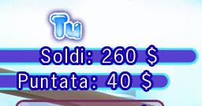
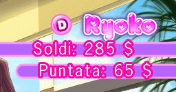
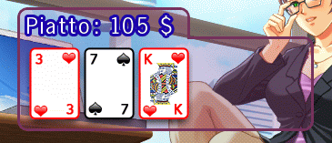
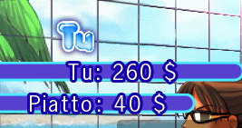
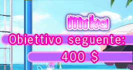

15 |
Interfaccia di gioco |
 |
Cursore: Il cursore a forma di mano indica le icone che possono essere selezionate. Informazioni: Nel Texas Hold'em:  Nell'angolo in alto a sinistra dello schermo sono indicati il tuo denaro e la tua puntata. L'ammontare del piatto (pot) per ciascuna mano invece, è mostrato nel riquadro trasparente.  Nell'angolo in alto a destra dello schermo sono mostrati il denaro della tua avversaria e la sua puntata. L'icona del mazziere (D) invece, indica chi è il mazziere della mano in corso.  Le carte del Flop, del Turn e del River, insieme all'ammontare del pot, sono mostrate nel riquadro trasparente. Per muovere il riquadro sull'area di gioco, sposta il cursore sul riquadro e premi senza rilasciare . Nel Blackjack:  Nell'angolo in alto a sinistra dello schermo è indicato l'ammontare del tuo denaro e della tua puntata per la mano in corso.  Nell'angolo in alto a destra è mostrato l'obiettivo da raggiungere per far sì che la ragazza si tolga il prossimo indumento.
Sotto l'ammontare dell'obiettivo, appare una barra che indica quanto manca al raggiungimento dell'obiettivo e quindi allo spogliarello della ragazza! |

 |
 |
 |